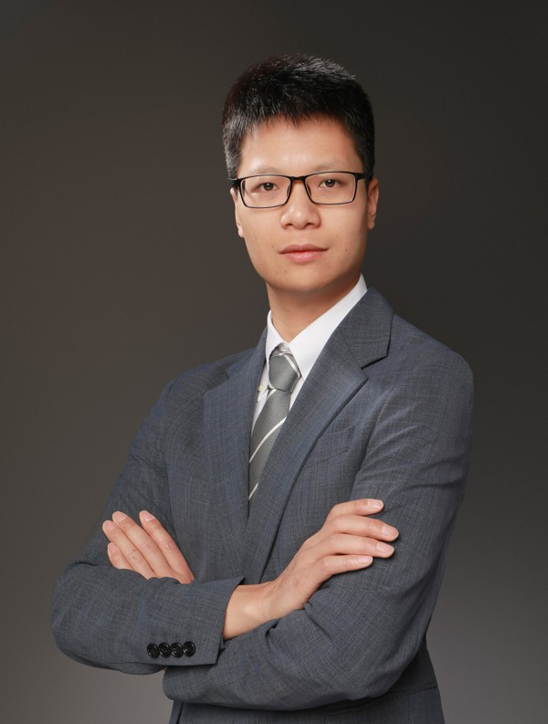

|
 |
Xiongkuo Min received the B.E. degree from Wuhan University, Wuhan, China, in 2013, and the Ph.D. degree from Shanghai Jiao Tong University, Shanghai, China, in 2018, where he is currently a tenure-track Associate Professor with the Institute of Image Communication and Network Engineering. From Jun. 2018 to Sept. 2021, he was a Postdoc at Shanghai Jiao Tong University. From Jan. 2016 to Jan. 2017, he was a visiting student at University of Waterloo. From Jan. 2019 to Jan. 2021, he was a visiting scholar at The University of Texas at Austin and the University of Macau. He received the Best Paper Runner-up Award of IEEE Transactions on Multimedia in 2021, the Best Student Paper Award of IEEE International Conference on Multimedia and Expo (ICME) in 2016, the Best Paper Award of IEEE International Symposium on Broadband Multimedia Systems and Broadcasting (BMSB) in 2022, and several first place awards of grand challenges held at IEEE ICME and ICIP. His research interests include image/video/audio quality, quality of experience, multimedia, image/video processing, computer vision.
中文简介：闵雄阔，上海交通大学电子工程系长聘教轨副教授。2013年本科毕业于武汉大学，2018年博士毕业于上海交通大学，2018至2021年在上海交通大学做博士后，2021年至今于上海交通大学图像通信与网络工程研究所工作。研究方向为多媒体信号处理，主持国家自然科学基金面上、青年、博士后基金面上、CAAI-Mindspore学术基金、CCF-腾讯犀牛鸟基金、上海交通大学-华为ExploreX基金等项目；入选博士后创新人才、上海市浦江人才、上海市超博等计划；获中国图象图形学会技术发明一等奖、中国电子学会优博等国内奖励，以及IEEE TMM最佳论文提名奖、IEEE ICME最佳学生论文奖、IEEE BMSB最佳论文奖等国际奖励，多次获IEEE ICME、ICIP等挑战赛冠军；在IEEE/ACM汇刊及CCF A类会议上发表论文60余篇，其中5篇入选ESI热点/高被引论文，Google Scholar引用4800余次；获授权发明专利19项；任Displays、Hum.-centric Comput. Inf. Sci.等期刊编委。
|